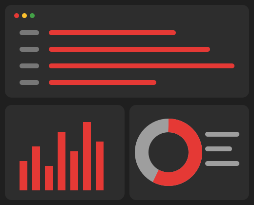
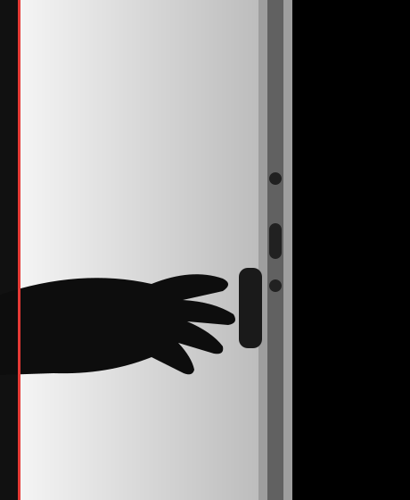
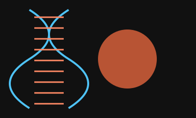
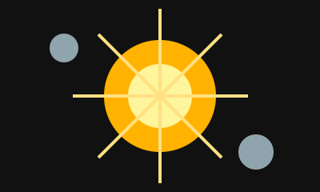
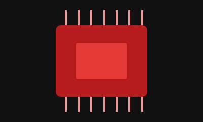
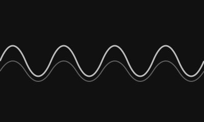

126
«Інформаційні системи і технології»
Ми спеціалізуємось на підготовці фахівців в області мережевих, програмних та інформаційних технологій за двома напрямками 172 - Електронні комунікації та радіотехніка і 126 - Інформаційні системи та технології.
«Інформаційні системи і технології»
«Електронні комунікації та радіотехніка»
| № | Дисципліна | Кредити |
|---|---|---|
| 1 | Мовні компетентності (іноземна мова) | 3.00 |
| 2 | Українські студії | 3.00 |
| 3 | Правова компетентність (на вибір) | 3.00 |
| 4 | Вища математика | 5.00 |
| 5 | Дискретна математика | 5.00 |
| 6 | Основи інфокомунікацій | 5.00 |
| 7 | Програмування на Python | 4.50 |
| Усього за семестр | 28.50 | |
| № | Дисципліна | Кредити |
|---|---|---|
| 1 | Іноземна мова | 3.00 |
| 2 | Формування системного наукового світогляду (за вибором) | 3.00 |
| 3 | Основи теорії кіл | 4.00 |
| 4 | Вища математика | 5.00 |
| 5 | Фізика | 5.00 |
| 6 | Алгоритми і структури даних | 4.00 |
| 7 | Програмування на Python | 4.50 |
| 8 | Навчальна практика | 3.00 |
| Усього за семестр | 31.50 | |
Перший предмет «Основи інфокомунікацій» розповість про цілі навчання за освітньою програмою, сучасні тенденції в інфокомунікаціях та інформаційних технологіях, можливості й варіанти вашого розвитку. Як і в усьому ХАІ, студент формує власну навчальну траєкторію вже на 1-му курсі за допомогою дисциплін за вибором: «Іноземна мова», «Українські студії», «Гуманітарна або економічна дисципліна за вибором» і «Правова компетентність за вибором». Вони розвивають у студентів так звані «м’які» навички (Soft Skills), які допомагають протягом усього навчання.
Фундаментальні курси «Вища математика», «Дискретна математика», «Фізика» формують основу для вивчення подальших прикладних курсів. «Основи теорії кіл» починають знайомство з електронікою в цілому. Паралельно з розвитком м’яких навичок і формуванням фундаменту для технічної частини ми посилено викладаємо студентам програмування. У курсі «Програмування на Python» вивчається мова програмування Python, інтегровані середовища розробки, системи контролю версій, різні бібліотеки та інструменти. Python є основною мовою програмування в цій освітній програмі й використовується практично в усьому навчальному процесі. «Алгоритми і структури даних» розширюють знання та розвивають навички програмування як для розробки мережевих застосунків, так і для систем обробки даних. «Навчальна практика» присвячена вивченню операційних систем на базі ядра Linux, що є основою для більшості інфокомунікаційних систем.
Досвідчених викладачів
Навчальних дисциплін
Талановитих випускників
Унікального досвіду
«Кафедра дала мені міцну базу з мереж: уже на третьому курсі я налаштовував обладнання на практиці, а після випуску одразу отримав офер.»
Network Engineer, телеком-оператор
«Python тут вивчають з першого курсу, тож до диплому в мене вже було портфоліо з реальних проєктів. Викладачі завжди готові допомогти й підказати напрямок розвитку.»
Python Developer, IT-компанія
«Найцінніше — лабораторії та робота з Linux. Те, що ми робили на практичних заняттях, я щодня використовую в роботі.»
DevOps Engineer, продуктова IT-компанія
«Атмосфера на кафедрі — як у команді: спільні проєкти, хакатони, підтримка старшокурсників. Раджу всім, хто хоче будувати кар’єру в IT.»
QA Automation Engineer, аутсорсингова компанія

Наші студенти не просто вивчають теорію — вони беруть участь у реальних проєктах, розробляють ІТ-рішення, створюють стартапи та співпрацюють з компаніями-партнерами. На кафедрі діють наукові гуртки, лабораторії та ініціативи, де кожен може реалізувати себе ще під час навчання. Дослідження, що перетворюються на продукт — саме тут це можливо.
Дізнатись більше
61070, Харків, вул. Вадима Манька, 17
НАУ ім. М.Є.Жуковського "ХАІ"
Кафедра інформаційно-комунікаційних технологій №504
Телефон
в будні дні з 9:00 до 17:00
Пошта

Запрошуємо абітурієнтів та батьків познайомитися з викладачами, лабораторіями та освітніми програмами кафедри.

Розповідаємо, як подати документи, які бали НМТ потрібні та як отримати консультацію приймальної комісії.

Команди студентів за 24 години створили прототипи IoT-рішень для розумного кампусу.

На кафедрі відкрилася лабораторія з сучасним мережевим обладнанням для практичних занять.